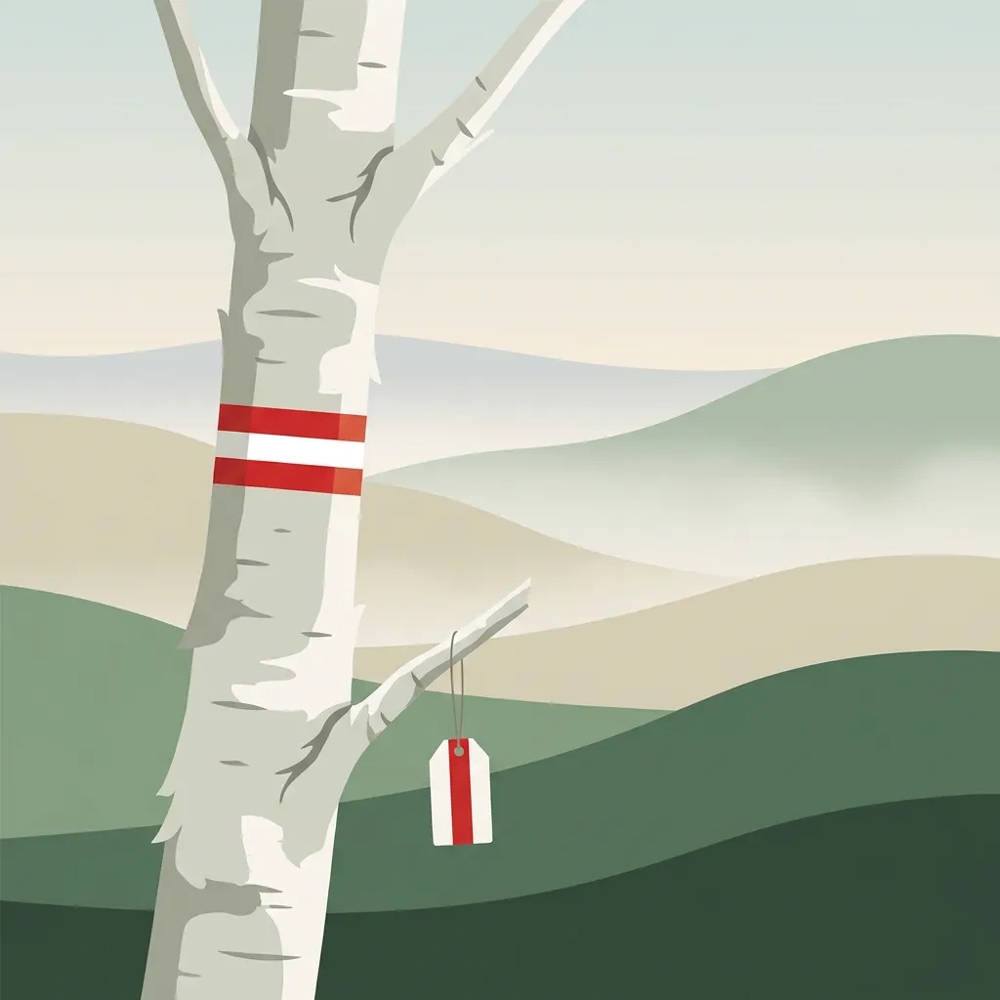

Carthing
Heard 12 min ago · next ~14:31
GPS ±8 m · 48.70120, 21.25410
12 min82 %
Beep · goes out ~14:31LibreTag is an open tracker that reports over the MeshCore LoRa mesh. It needs no SIM card, no cloud and no account. When it has no GPS fix, the app shows an area, not an invented point.
Status: a working prototype. The tag runs on real hardware. The app and the bridges are still early.

Two tags as the app shows them (example)
Heard 12 min ago · next ~14:31
GPS ±8 m · 48.70120, 21.25410
Heard 41 min ago · next ~14:50
No GPS · area ±1.2 km (68 %)
A short explainer of the idea and of how a report finds its way to your phone.
LibreTag is a small tag for a car, a bag or a child's backpack. It sleeps almost all the time. About once an hour it wakes up, looks for a GPS fix, sends one encrypted packet over the MeshCore mesh and listens for a short while in case you sent a command. Then it goes back to sleep.
The tag talks over LoRa on the community MeshCore mesh. There is no SIM card to buy and no data plan to pay for.
Positions travel between the tag, your phone and relays that anyone can run. There is no company server that holds them, and only you can read them.
You pair the tag with a USB-C cable. That is the whole setup, and you never create an account. Later changes work over the cable or over Bluetooth.
The tag does nothing for most of the hour, to save battery. Each wake-up follows the same cycle.
The packet hops through MeshCore repeaters. If your phone is connected to your own MeshCore node, it hears the report directly, and when the tag is in that node's range a command goes straight from it, to radios in range only. For now this needs our modified MeshCore Open, see Your own node.
A bridge is a MeshCore node plus a small program that publishes what it hears to Nostr relays. It decrypts nothing and signs every report with a random key. Thanks to bridges the app finds the tag in another town or another country. Commands travel back the same way: the app leaves them in a Nostr mailbox, and a bridge that heard the tag sends them. Bridges announce themselves on Nostr, so the app can address a command to the ones that heard your tag.
Lost mode (a report every 10 minutes for 24 hours), Track for an hour at an interval you choose, Beep, a Bluetooth scan, and Open Bluetooth remotely. Lost mode and Track can be stopped early. The tag sleeps, so a command goes out at its next report or check, and the app tells you when and which way: “Beep · goes out ~14:31”, then “confirmed” once the tag answers. With your phone next to the tag the command goes over Bluetooth, otherwise from your own node if the tag is in its range, and through the bridges if neither reaches it.
Without your own node, the app works over the USB cable or Bluetooth (pairing and settings) and Nostr. Reports and commands then go through bridges between MeshCore and Nostr, so a bridge has to be within reach of the tag, in its country or area. With no bridge nearby, no reports arrive over Nostr.
In a garage or under thick cover the tag may have no fix. Every report also carries up to five MeshCore repeaters the tag heard, and its last GPS fix with the time.
The app matches those repeaters against a public repeater map (about 55 000 repeaters, downloaded once and refreshed after 30 days) and draws two areas, one at 68 % and one at 95 %. It is an area, not a point. When a repeater code is shared by several repeaters, the app says it cannot tell instead of guessing.
On real data the estimate was off by about 1 to 1.4 km. Treat it as the place to start looking. Your positions are never sent to a geocoder.
Every feature is judged by what a thief with the device, a relay operator or someone with a radio can learn from it.
Reports are encrypted in SIV mode, so a repeated counter reveals nothing.
Each report carries a rotating 4-byte tag instead of a permanent identity. Only you can tell which tag a packet belongs to.
The keys advance every 64 reports and the old ones are overwritten on the tag. Someone who steals it and reads it out cannot read the older reports.
After pairing, the key leaves the tag and its USB console locks. Only your app can unlock it.
Each report points to a key that only you and the people you gave control of the tag can sign with. Bridges send only commands signed with it, so a stranger cannot get a bridge to send anything to your tag.
That a LibreTag report was sent, and roughly where, from the first repeater in its path. They cannot see which tag it was or what the report says. The #libretag channel itself is public. While the tag listens on Bluetooth, a phone nearby sees a device advertising from a private address, but not which tag it is, and without your key the tag answers nothing.
These features exist in the current app and firmware.
Tap the map where the tag usually rests, such as home or the garage. Inside a place the tag stays quiet and sends only a heartbeat once a day. It reports when it leaves. For each place you choose whether the app tells you when the tag leaves and when it arrives.
Pick devices you carry that keep a steady Bluetooth identity, such as a ring, a watch or a hearing aid. While one of them is around, the tag stays quiet, with a heartbeat at least every 8 hours. A phone changes its Bluetooth address and usually sends nothing at rest, so it rarely works as one of these devices.
Connect the tag to the phone by cable or over Bluetooth and the app copies the history stored on it. The transfer is encrypted.
After a restart the tag listens on Bluetooth for 3 minutes. The app connects without a cable and can do everything the cable does, except a firmware update, a new key and a reset of the pairing. You can also skip the restart: Open Bluetooth remotely asks the tag to listen at its next check, and the app shows when that will be. It needs Android 12 or newer.
After about two weeks of data the app estimates the remaining runtime. It is an estimate. We have not measured it on a bench yet.
At 25 % the app sends you a Nostr direct message from the tag's own key. Below 10 % the tag sends it by itself over the mesh, through any bridge. The message disappears from relays after 14 days.
Ask the tag which Bluetooth devices are around it and it reports them. In Lost mode it includes them on its own.
A report every 10 minutes for 24 hours. It survives a restart of the tag. If the tag stays in one place for 2 hours, it reports every 20 minutes until it moves.
The tag reports every 2, 5, 10, 15 or 30 minutes for an hour, as you choose.
Track and Lost mode report at most every 2 minutes. A tag that has sent 200 packets in a day slows to one report an hour until the count drops, and it still answers your commands. It does not transmit when the battery voltage is too low.
Browse a tag's history by day (Today, Yesterday) with a slider over its reports. The map and the status follow the slider.
A quiet tag still wakes every hour, looks around and listens for about 30 seconds, longer while the GPS searches. A command reaches it within an hour, without waiting for its next heartbeat 8 or 24 hours away. It transmits only if something changed.
A car that has not moved goes quiet after about three reports instead of saying “still here” every hour. It reports again as soon as it moves.
Choose how often the tag reports: 15 minutes, 30 minutes, 1, 2, 3 or 6 hours. It can also wake more often than it reports, only to listen for commands, which saves battery and mesh traffic.
For the day you lose your phone, or when you want a bigger screen. Sign in with Nostr or restore with your recovery phrase, then see your tags and their positions, and send or cancel commands. It works only through Nostr, so a bridge has to be near the tag, and without GPS it shows no area estimate. Open the web app.
Guard a spot and the app raises an alarm if the tag moves more than 300 m. That is the only alarm. The app also tells you when a tag is not heard when expected and when its battery is low, and you choose both per tag.
Built, waiting for tests in the field.
A small ESP32-S3 board (Heltec Wireless Stick Lite V3) runs the firmware on the bench. It has no GPS. You snap a place with the tag on the cable, and from then on it recognises the place by the Wi-Fi networks it hears and stays quiet there. That works on the bench. Leaving a place has only been simulated, and nobody has run the board on a battery yet. The X1 and the Wio Tracker L1 Pro have no Wi-Fi.
A report from that board lists the Wi-Fi networks it heard. The app can turn them into a position through BeaconDB, a GrapheneOS proxy or Apple: only when you tap, in Lost mode, or for every report without GPS. Each lookup tells the service which networks are near the tag, so it is off until you choose a service.
When your phone is near the tag, it sends a waiting command over Bluetooth, and the tag looks for it at every wake-up, so the command arrives at the next check without crossing the mesh. The tag side works on the bench. Delivery from a real phone over the air has not been tested yet.
The same tag, set up differently in the app.
It does not prevent a theft. It tells you where the thing was an hour ago, and where it is now if it is still reporting. A thief who finds the tag and removes it ends the trail.
LibreTag is not a certified safety device, and we make no promise that it protects anyone from harm. Tell the person who carries it. A tracker on an adult needs their agreement.
LibreTag firmware is a set of patches on top of ZephCore. Two Seeed boards matter.
A card-sized tracker with dual-band GNSS, USB-C and an IP66 body. It is the board LibreTag is designed around. ZephCore supports it, but nobody has run LibreTag firmware on one yet. The Seeed listing mentions Meshtastic, because that is the firmware it ships with.
The board LibreTag is developed and tested on. LibreTag firmware runs on it today. It is larger than the X1 and has a display, so it suits a car or a bag better than a pocket. You flash the firmware by copying a .uf2 file onto a USB drive that appears.
Both Seeed links are affiliate links. If you buy through them, the project may earn a commission at no extra cost to you. Seeed coupon code: 56BZ8WER (check at checkout what it covers). The L1 Pro link goes to the MeshCore version of the board.
A signed APK for now. Zapstore later. Works on phones without Google services, such as GrapheneOS. To use your own MeshCore node you need our modified MeshCore Open for now (below).
Download APKRuns in the browser over Nostr, for when you do not have your phone. It needs a bridge near the tag.
Open the web appOpen source under the MIT licence: firmware, app, bridges and this website.
SourceA bridge is a MeshCore node on a USB cable and a small program, or the Nostr bridge app on a phone. Over Nostr the app only hears a tag where a bridge is within reach of it, so more bridges mean more places where a tag can be found.
Bridge guideLibreTag is free. If it is useful to you, you can support its development.
Support LibreTagLibreTag can use your own MeshCore companion radio through MeshCore Open. The app then hears the tag's reports directly and can send commands from your node. That needs the Local API, which the official MeshCore Open does not have yet. Until it is merged upstream, use our modified build.
79750fb49349ec3729be5a3e825507a15e47c6d987e854ae91d5d50a20b3a24dYou do not have to do this. Without it LibreTag still works: reports and commands go through Nostr bridges, and settings over the cable or Bluetooth.
Updates and questions go through the project's Nostr account.
npub17a09su3mlphlf264ztkh9tc7esmexmqvuw3akttp3rr5735jhcmqucwudu